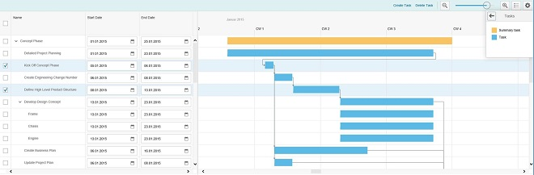
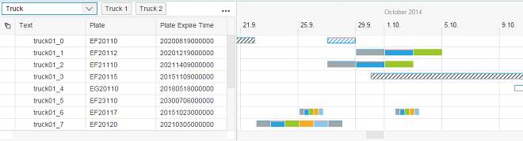
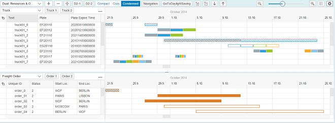
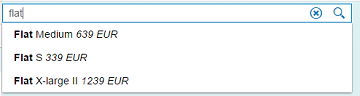
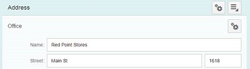

What's New in SAPUI5 1.36
With this release the UI development toolkit for HTML5 (SAPUI5) is upgraded from version 1.34 to 1.36.
In the following sections, we list the main new features and enhancements to SAPUI5. For a complete, detailed list of all new and enhanced functions, see: Change Log.
-
Gantt charts are a state-of-the-art function that can be used in various application domains, particularly in planning and scheduling. In resource-based planning, for instance, a Gantt chart can be used to show the plan using intuitive graphics, making it easier to view resource availability. In addition, it also helps when monitoring the actual execution of the plan and enables interactive resource-based planning by drag&drop. In project management, it is often used to display the project structure in a hierarchical way, showing milestones and relationships between activities.
The GanttChart control provides a rich set of features, such as displaying one or more Gantt charts, various events for user interaction (e.g. drag&drop or mouse click events), multiple basic shapes (e.g. rectangles, milestones, triangles, relationships) and more sophisticated shapes (e.g. utilization line chart, utilization bar chart) drawn in the chart area, comprehensive tree table features provided by the underlying TreeTable control, and powerful configuration capabilities (e.g. shape colors and patterns, application-specific buttons) as well as zooming and scrolling. In addition, a consuming application can implement its own shapes for the chart area. The Gantt chart control does not contain any business logic, meaning consuming applications have to define their own user interaction and business semantics.
For more information, see the API Reference in the Demo Kit.
-
sap.gantt.GanttChartWithTable: The GanttChartWithTable control contains a tree table to the left and a chart to the right. It can display a data hierarchy in the tree table and visualize its specific data along a time axis in the chart area.
All controls that can be used inside the tree table are also supported in the Gantt chart.
The application can control the visibility of the toolbar above the tree table, the display of buttons and menu items, as well as the time axis display, such as planning period and zoom level. The application can also control the display of shapes contained within the chart area, such as shape types and colors.
For more information, see the API Reference and the sample in the Demo Kit.
 -
sap.gantt.GanttChartContainer: The GanttChartContainer control contains more than one GanttChartWithTable control and a global toolbar. It can affect the behavior of all embedded GanttChartWithTable controls, such as zoom level, view layout, and default settings.
The global toolbar provides default buttons, such as buttons for zooming, settings, and layout. The application can define additional buttons or hide default buttons as needed. Multiple views can be laid out vertically or horizontally, and the scrolling (both horizontally and vertically) can be synchronized, depending on the settings. Default options are provided in the settings to control the behavior of the control, such as Indicate Current Time, Show Cursor Line, Show Divider Line, Synchronize Time Scroll, and Synchronize Row Scroll.
For more information, see the API Reference and the sample in the Demo Kit.

-
-
RadialMicroChart: You can use the new RadialMicroChart to display values in a circular chart with a percentage value in the center.

Different properties are provided allowing you to configure the percentage value. The control supports a responsive design. Depending on the available space and favored size of the chart, you can influence the chart's size and representation. You can also use a property to define the color of the circle.
For more information, see the API Reference and the sample in the Demo Kit.
-
sap.m.FlexBox: The FlexBox control now allows wrapping items into multiple lines and influencing the layout of these lines. The sizing behavior of flex items can be adjusted with minimum or maximum width and height values.
For more information, see the API Reference for sap.m.FlexBox and sap.m.FlexItemData in the Demo Kit.
-
sap.m.MultiInput: This control now has the new property maxTokens, which defines the maximum number of tokens that are allowed within the MultiInput.
For more information, see the API Reference and the sample in the Demo Kit.
-
sap.m.SearchField: This control now has a new suggestions feature. When a user enters something in the search field, the application can now display a list of suggestions.
For more information, see the API Reference and the sample in the Demo Kit.
-
sap.m.TimePicker: A user can now edit or delete values directly from the input field on mobile devices.
-
sap.m.UploadCollection: You can now download an item from the upload collection list. For this feature, two new methods have been added, one to the UploadCollection and the other to the UploadCollectionItem. This means you can choose from where you want to call the method. Both methods allow you to define if the default download location of the browser is used or if the file dialog is called via a parameter to store to a different location. For more information, see Upload Collection, the API Reference, and the sample in the Demo Kit.
-
sap.m.Wizard: You can now add titles for steps (in addition to icons) that are shown in the progress navigator of a wizard. Titles help users to relate the progress navigation part to the step content easily.

For more information, see the sample in the Demo Kit.
-
sap.ui.layout.DynamicSideContent: You can now configure the position of the side content to appear either to the left or to the right of the main content.
For more information, see the API Reference in the Demo Kit.
-
sap.ui.layout.form.Form and sap.ui.layout.form.SimpleForm: Toolbars can now be used in Form or FormContainer headers.
For more information, see the API Reference for Form, FormContainer, and SimpleForm and the samples for FormToolbar and SimpleFormToolbar in the Demo Kit.
-
sap.ui.layout.form.SimpleForm: This control now has the new property backgroundDesign, which can be used to switch between different backgrounds.
For more information, see the API Reference in the Demo Kit.
-
sap.ui.comp.smartchart.SmartChart: The SmartChart control now allows you to navigate to the related semantic object for your chart when you select the relevant part of the chart, such as a column. For this purpose, the SmartLink control has been implemented along with a new button (Jump To) in the toolbar.
In addition, the control provides the following new features in the toolbar:-
Chart type shown as icon
-
Zoom in and out
-
Maximize and minimize
-
Toggle legend visibility
For more information, see the API Reference and the sample in the Demo Kit.
-
-
sap.ui.comp.smartform.SmartForm: The adjustLabelSpan and singleContainerFullSize properties of SimpleForm have been added to the SmartForm control.
For more information about these properties, see the API Reference in the Demo Kit.
For more information about smart controls, see sap.ui.comp.
- sap.ui.vk
library: The following improvements have been implemented in the visual interaction toolkit:
-
The NodeHierarchy control now has the new methods fineNodesByName and findNodesByMetadata, which allow you to search for specific nodes in a 3D scene.
For more information, see the API Reference in the Demo Kit.
-
The NativeViewport control now allows for viewing a wider range of file formats that are natively-supported by browsers. For more information, see Native Viewport.
-
What's New in Analysis Path Framework
Several new or changed features are available for Analysis Path Framework (APF).
In SAP S/4HANA the content of a shipped APF-based application resides in the VENDOR layer of the layered repository of the SAPUI5 flexibility services. The APF Configuration Modeler now offers the option to import delivered content directly from the VENDOR layer, so you no longer have to copy the files from a BSP application. The content is then written into the CUSTOMER layer and can be edited and run from there.
For more information, see Import.
When you specify a service in the APF Configuration Modeler, for instance, for the data request of an analysis step, you can now select the desired service from a value help. This value help is provided by a catalog service that lists all services available on SAP Gateway. Therefore, you can use the value help for ABAP CDS views and BW OData queries. If you use calculation views that are exposed on SAP HANA extended application services (SAP HANA XS), you can still enter the service manually.
You can now manually enter a list of values for the value help of a filter. This is useful if you don’t have a service available that produces the desired values.
For more information, see Individually Configured Filters.
For the dimensions that are used for the axes or legend of a chart, you can define whether the key property or the text property is displayed, or both.
For more information, see Creating Representations.
To get a preview of how your configuration looks at runtime, you can now execute it directly from the footer of the APF Configuration Modeler using the Execute button.
For more information, see Executing a Configuration.
In APF-based applications, it is now possible to make selections in table representations. As in all other chart types, the selections filter the data of all subsequent steps and they are also added to the context that is handed over when navigating to a different application. Depending on the selectable property, when you select an entry in the table, all entries in the table with the same property are automatically selected, too.
A line chart with time axis has been added to the predefined representation types shipped with APF.
For more information, see Predefined Representation Types.